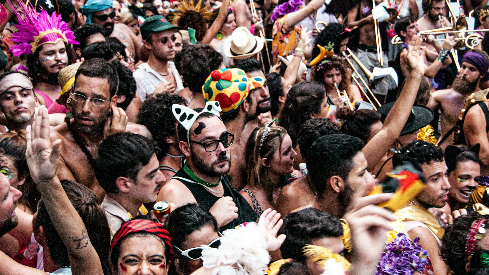
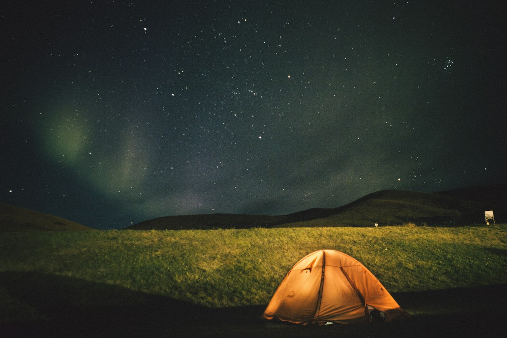

Trilha no domingo, show na sexta, chopp depois do trabalho ou só aquela vontade de comer fora. O KIVAK é onde o rolê é combinado: comunidade pra cada tribo, evento com data e lista de quem vai, e um mapa com os lugares que valem a saída.
Tem domingo de cachoeira e tem sexta de bar. Tem quem acorda às 5h pra pegar a trilha e quem só quer saber onde tem rock hoje. No KIVAK cabe tudo, porque a pergunta é sempre a mesma: o que a gente vai fazer? Nada do que já existia aqui saiu do lugar. A trilha, o mapa e o GPS continuam inteiros, agora com companhia.
Quem toca hoje, onde, a que horas e quanto custa. Por estilo: rock, sertanejo, samba, eletrônica, o que for a sua.
O boteco de sempre, a cervejaria nova, o pagode de quinta. Com a agenda da casa e a turma confirmada antes de você sair.
Da pizza de domingo ao restaurante na estrada. Avaliado por quem sentou na mesa, não por quem recebeu pra postar.
GPS de verdade, altimetria e o traçado ponto a ponto. O KIVAK começou por aqui e continua igual, com a mesma seriedade de sempre.
Campings e lugares avaliados por quem dormiu lá, no mapa, com o caminho e o que esperar na chegada.
Festival, feira, aniversário, encontro de carro antigo. Se tem data e tem gente, tem lugar na agenda.

Quem viveu o Orkut lembra bem: você entrava numa comunidade e achava gente igual a você. Não era feed, era lugar. Tinha dono, tinha assunto, tinha discussão, e dali saía encontro de verdade, com hora marcada e todo mundo aparecendo.
Aquilo acabou. No lugar entrou um feed que decide por você o que merece a sua atenção, e um grupo de mensagens que ninguém aguenta mais abrir. Quem tem vinte anos hoje nunca viveu a internet desse jeito. Deveria.
No KIVAK, comunidade voltou a ser o centro. Crie a sua sobre o que você quiser: a galera do rock da cidade, o pessoal que corre no parque às 6h, quem caça boteco bom, quem viaja de van. Com regras, com quem administra e com evento próprio.
Sessenta pessoas no grupo, trinta e duas mensagens sobre a data, e no dia aparecem três. O problema nunca foi falta de vontade: é que combinar dá trabalho e ninguém assume o papel de marcar.
No KIVAK, evento é evento: tem data, hora, lugar no mapa, preço da entrada e a lista de quem vai. Você cria o seu em trinta segundos, pela sua comunidade ou pela sua página, e todo mundo vê quem confirmou.
E quando você não quer organizar nada, só quer sair: abre a agenda e vê o que já está marcado perto de você, hoje, neste fim de semana ou neste mês.
“A internet já serviu pra marcar encontro. Em algum momento, ela passou a servir pra substituir encontro.”O KIVAK é a teimosia de voltar pro primeiro jeito

O melhor camping da região normalmente não tem estrela no Google. O bar que toca blues na quarta também não aparece em lugar nenhum. Esse conhecimento morre no grupo de WhatsApp.
No KIVAK ele vira mapa: cachoeira, camping, mirante, bar, casa de show, restaurante. Cadastrado, localizado e avaliado por quem esteve lá. Não por algoritmo nem por anúncio pago, mas por gente que foi.
Você já tem onde postar foto bonita. O que faltava era um lugar onde ela viesse acompanhada da trilha inteira desenhada no mapa, do desnível real e do tempo que você levou.
Quando você grava uma trilha no KIVAK, a gente grava de verdade: velocidade, altimetria ao vivo, ganho e perda de elevação, o traçado ponto a ponto. Tudo com filtro de ruído de GPS, para que o seu perfil mostre o que seus pés fizeram, e não o que o satélite achou que você fez.
Daily que some em 24 horas, drop em vídeo pro show ser visto em movimento, feed com curtida e comentário, chat direto pra combinar o horário. A diferença não está aqui: está em tudo que vem embaixo, que existe pra você acabar saindo de casa.
Nem tudo precisa virar monumento. Poste onde você está agora e some em 24 horas.
Vídeo vertical em feed infinito, pro refrão que todo mundo cantou junto e pra descida que só faz sentido em movimento.
Foto da mesa, do palco ou da trilha gravada, com curtida e comentário de quem estava junto.
Converse direto pra acertar quem passa de carro, que horas e onde encontra todo mundo.
Checklist de camping, primeira trilha, como gravar trilha com GPS no celular e o que fazer no fim de semana: tudo o que a gente gostaria de ter lido antes de começar.